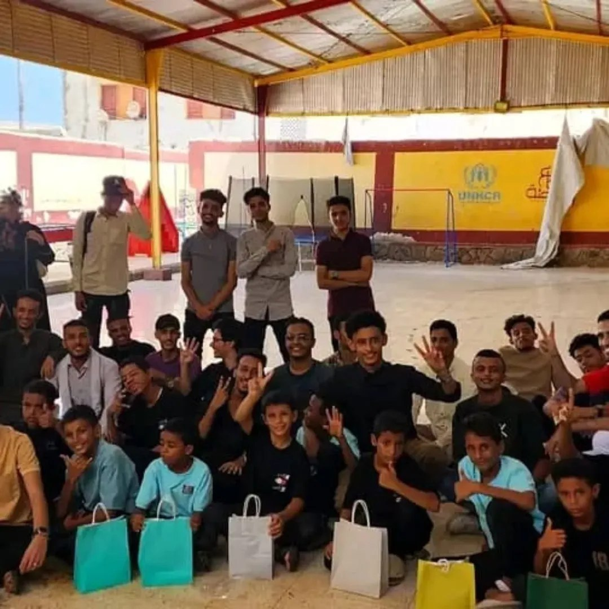
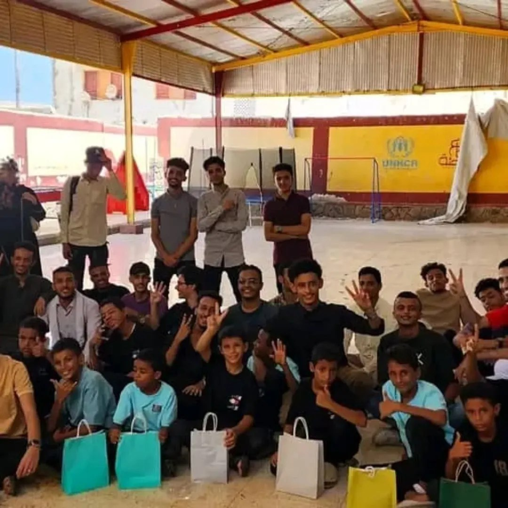

زيارة دار الرعاية والأمومة
أقيمت في تاريخ 10/10/2024
عرض المزيدالأثر يبدأ منك
أقيمت في تاريخ 10/10/2024
عرض المزيدفي شهر رمضان للعام 2025
عرض المزيدأحد منجزات حملة لبيك ياغزة-الجزء الأول
عرض المزيدأحد منجزات حملة لبيك ياغزة-الجزء الثاني
عرض المزيدتمت على مرحلتين ضمن الجزء الأول
عرض المزيدفي تاريخ 20/11/2024
عرض المزيد
في مستشىفى الصداقة-عدن
عرض المزيددار رعاية المسنين ودار الفردوس لرعاية الأيتام
عرض المزيدضمن حملة لبيك ياغزة-الجزء الثاني
عرض المزيدأحد منجزات حملة لبيك ياغزة-الجزء الثاني
عرض المزيدأحد منجزات حملة لبيك ياغزة-الجزء الأول
عرض المزيدمبادرة 49 الطلابية الخيرية هي مبادرة طلابية تطوعية نشأت عام 2024 كخطوة انسانية داخل الدفعة بهدف مساعدة الطلاب المتعسرين والمحتاجين، وتعزيز روح التكافل بينهم. ومع مرور الوقت، توسعت المبادرة لتشمل دعم الأسرالمتعففة، والمساهمة في التخفيف عن المحتاجين، الى جانب تنفيذ حملات تضامنية لدعم المحاصرين في غزة.
يتركز نطاق عمل المبادرة داخل الجامعة ومدينة عدن، حيث تسعى الى احداث أثر انساني ملموس من خلال مشاريع خيرية منظمة يقودها الطلاب أنفسهم. وتتميز مبادرة 49 بأنها نابعة من روح طلابية خالصة، تقوم على التكافل والعمل الجماعي داخل الفريق، وتسعى باستمرار الى التطور والتقدم في تنفيذ مشاريعها بما يخدم الفئات المستهدفة ويعزز قيم العطاء والمسؤولية المجتمعية.
قام شباب المبادرة باقامة زيارة متواضعة لدار الرعاية والأمومة في مديرية المعلا وقاموا بتبادل الحديث مع الأطفال والترفيه عنهم كما قامت المبادرة بايداع السلال الغذائية والملابس لقرابة ال32 طفلا اضافة الى توزيع الهدايا لهم.
 

عملت مبادرة 49 الطلابية الخيرية على أن تبدأ أولى حملاتها في مدينة عدن واستغلالا للأجر العظيم الذي يجره شهر رمضان المبارك، بإقامة مشروع إفطار الصائم الذي استقبل بحماس طيب من جمهور الداعمين والمنتسبين للمبادرة حيث بلغ عدد الوجبات أكثر من 4000 وجبة استمر توزيعها لعشر أيام متواصلة.
بعد اطلاق حملة لبيك ياغزة في تاريخ 6/11/2024 ومرورها بالعديد من المراحل التي اتت أكلها، نجحت مبادرة 49 في ايصال المبالغ المجمعة وتوزيع مايقارب 1000 وجبة طعام ساخنة للمحاصرين في غزة.
قامت مبادرة 49 الطلابية وكأحد مخرجات الجزء الثاني من حملة لبيك ياغزة الذي أقيم في أغسطس عام 2025 بتوزيع قرابة 18 علبة حليب للأطفال لرسم البهجة في وجوههم ودعما للأمهات نظرا للظروف القاسية التي يعيشونها.
جاء هذا المشروع استكمالا لمشاريع الخير التي عزمت مبادرة 49 الطلابية على اتمامها في شهر رمضان المبارك لأجره العظيم، وتم فيه توزيع 35 سلة غذائية على مرحلتين استهدفت الأسر المتعففة وبلغ مستفيدوها أكثر من 230 شخصا حصلوا على الاحتياجات الأساسية من الغذاء.
قامت المبادرة باقامة اولى برامجها التي تسهم في تعزيز روح التعاون واعطاء فرصة لكل الفئات للمشاركة في الدعم، وقد كان هدف الطبق الخيري جمع التبرعات لارسالها الى غزة. تضمن الطبق عدة أركان منها ركن المأكولات، المعجنات، المشروبات، الاكسسوارات والرسم والذي أبرز كل ركن مهارات الطلاب في اعداد الطعام والشراب وتشكيل الاكسسوارات والرسم.
قامت مبادرة 49 الطلابية الخيرية بالنزول إلى مستشفى الصداقة في 25/3/2025 وقامت بتوزيع 40 وجبة مكونة من الأرز والدجاج والماء والتمر والتي أستهدفت 80 شخصا من المرضى ومرافقيهم خلال شهر رمضان بهدف دعم المرضى والتخفيق من معاناتهم وتقوية الروابط الاجتماعية.
قامت مبادرة 49 الطلابية الخيرية ضمن حملاتها المتنوعة بزيادة دار الفردوس الخاص بالايتام ودار المسنين وذلك في 29/1/2026 والتي قامت فيه بتوزيع سلل غدائية واقامة وجبة غداء وذلك للترفيه عنهم ومؤانستهم وتقوية الورابط والتآلف.
بعد نجاح الطبق الخيري الأول قامت مبادرة 49 الخيرية الطلابية بأقامة الطبق الخيري الثاني والذي أقيم في البيرق مول والذي تضمن اركانا عديدة منها الاكسسوارات، المشروبات، المأكولات، المعجنات، الكتب، الرسومات وركن التبرعات والتي أسهمت بشكل كبير في تجسيد روح التعاون والتطوع من مختلف الناس في المساهمة في الطبق والتبرع.
قامت مبادرة 49 الطلابية الخيرية باعانة أهلنا في غزة ومؤازرتهم حين وأن الحصار قد أشتد بهم، باقامة مشروع سقي الماء والتي ضمنت استفادة 3000 شخصا بمعدل كمية 6000 لتر من الماء النقي، وذلك لكي تخفف عنهم الآم الحصار ومعاناتهم.
باستمرار الحصار وصعوبة أدخال الطعام لأهلنا بغزة، قامت مبادرة 49 الطلابية بدعم أهلنا في غزة بالسلل الغذائية بمكوناتها الأساسية وذلك حرصا على تخفيف معناتهم وادخال الطمأنينة والسرور في قلوبهم.
قامت مبادرة 49 الطلابية الخيرية بالنزول إلى مستشفى الصداقة في 25/3/2025 والتي أستهدفت 80 شخصا من المرضى ومرافيهم بتوزيع 40 وجبة مكونة من الأرز والدجاج وماء وتمر خلال شهر رمضان بهدف دعم المرضى والتخفيق من معاناتهم وتقوية الروابط الاجتماعية